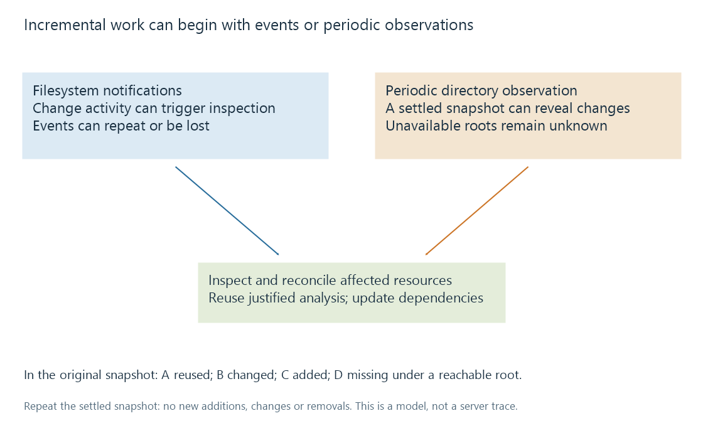

Incremental library scans
Incremental library scans reuse unchanged catalogue work while identifying the resources and dependent results affected by observed changes.
An incremental scan limits repeated work by using what the catalogue already knows. It tries to identify additions, changes and removals, then updates the affected items and derived results. Unchanged resources can reuse previous analysis.
Incremental does not necessarily mean “look only at one directory.” A scan can enumerate a whole root while avoiding expensive reanalysis of files whose chosen change signatures agree. Discovery scope and recomputation scope are different quantities.
An original snapshot comparison
Suppose a scanner records a path, size and modification timestamp for each resource:
| Path label | Previous size/time signature | New observation | Initial decision in this model |
|---|---|---|---|
| A | 1,000 bytes / time 1 | Same | Reuse |
| B | 2,000 bytes / time 1 | 2,500 bytes / time 2 | Changed |
| C | None | 700 bytes / time 2 | Added |
| D | 900 bytes / time 1 | Absent under a reachable root | Missing |
The tiny sizes are invented signatures, not movie sizes. Under these observations, one previous resource can be reused, one needs change handling, one is new and one is no longer present.
Now repeat the scan against the same settled observations. There are no new signature changes. A well-defined incremental model should not keep inventing a fresh addition of C each time. That property—repeating the same reconciliation without creating additional changes—is useful when reasoning about retries.
A cheap signature is not proof of byte identity
A replacement can retain the same size and timestamp. Backup restores, coarse timestamp resolution and deliberate metadata preservation can produce that result. The model would classify it as unchanged even if the bytes differ.
A complete cryptographic hash provides much stronger byte evidence, but obtaining it requires reading the complete resource. That can be expensive across large media collections or remote storage. Hash equality also says nothing by itself about whether two differently encoded resources represent the same cut.
These are different trade-offs:
| Change evidence | Work needed | Useful limit |
|---|---|---|
| Path/name | Directory information | Cannot establish content continuity |
| Size and timestamp | File attributes | Can miss changes that preserve both |
| Complete-file hash | Read all bytes | Strong byte evidence, not catalogue-work identity |
| Media analysis | Inspect relevant structures or content | Cost and meaning depend on the analysis performed |
No single row supplies every kind of identity. Media item identity explains why the distinctions matter.
Notifications trigger inspection; they do not replace it
Real-time monitoring receives operating-system notifications of changes. An incremental reconciliation can use those notifications to decide what to inspect. It can also run after periodic enumeration without receiving any notification.

Microsoft documents that filesystem notifications can be duplicated and that their buffers can overflow. An event stream is therefore not a perfect ledger of every final resource state. A rename or complex operation can also produce several notifications.
A file-created event does not establish that a long copy has finished. Software may need to coalesce activity, recheck the file or defer dependent work until a usable resource is observed.
Emby's library documentation describes real-time monitoring on supported filesystems. That establishes a product capability; the original diagram above does not reconstruct its debounce, retry or queue implementation.
Changed resources invalidate dependent results
Suppose a video is replaced at the same path with an extended cut. Recognizing the change is only the first step.
Technical stream information may need reprobe. Seek previews and intro markers were derived from the old timeline. Any retained correspondence for a resume value needs assessment. A movie title retrieved from a work-level provider can remain correct while all those resource-specific facts change.
This is a dependency problem. In a conceptual cache:
resource version
-> stream analysis
-> timeline previews
-> content-derived markers
Reusing the descriptive movie record does not justify reusing every derived resource result. Conversely, retagging only a descriptive field need not require recomputing every video-derived result in a model that can distinguish those dependencies.
A product chooses its own invalidation rules and signatures. The model explains the required relationships, not a promise that every small edit has an identical cost in Emby.
Reachable absence differs from failed observation
A periodic scan can recover a missed notification by observing a settled directory. But an unreachable root still supplies incomplete evidence. Treating all its previous items as confirmed deletions would equate “could not inspect” with “inspected and found absent.”
The system's actual response belongs to its retention and error policy. For understanding the result, keep discovery success, resource availability and confirmed removal as distinct states.
See Also
- Library scanning and catalogue reconciliation
- Technical analysis of library media
- Seek-preview thumbnails
- Media item identity